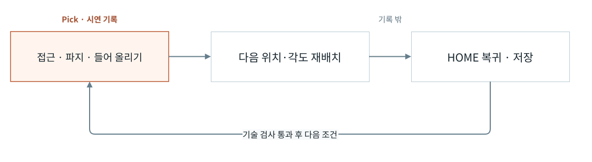
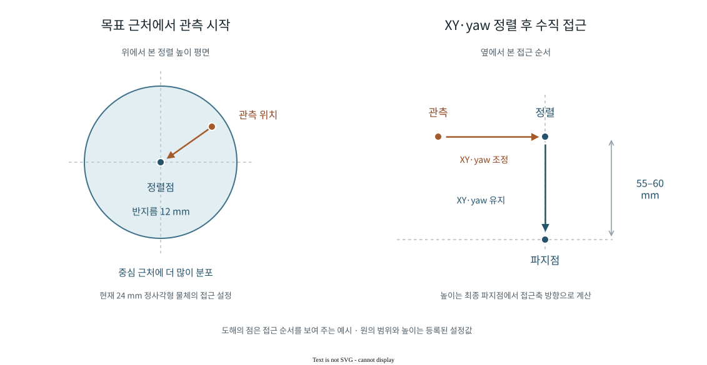
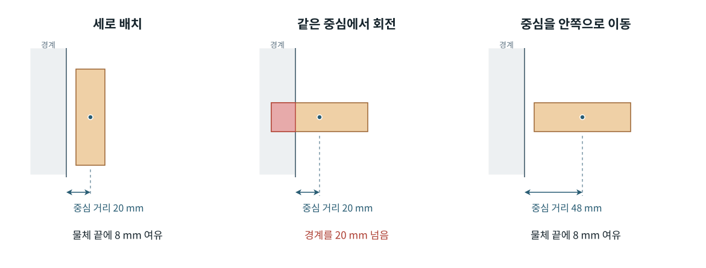
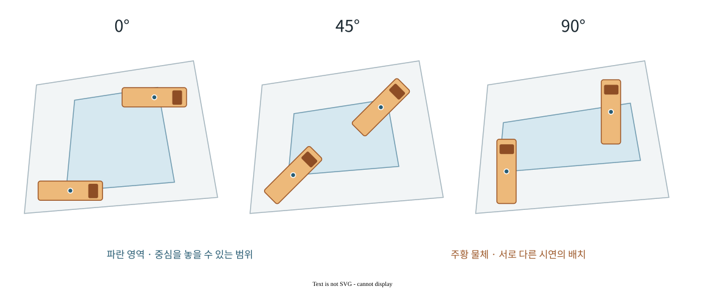
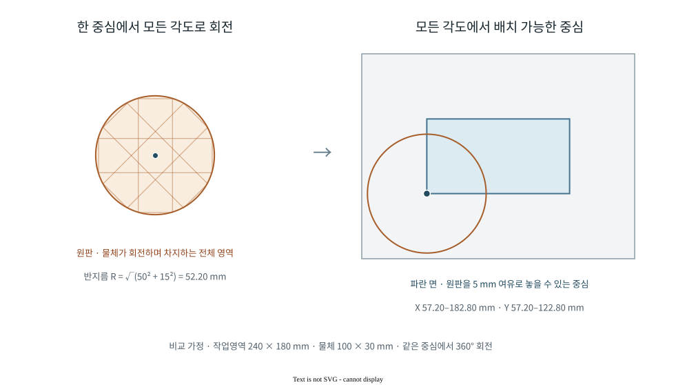
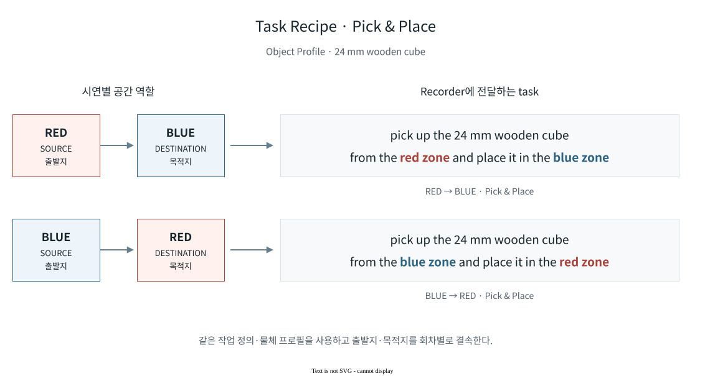

Recorded Demonstrations
위치·각도를 바꿔 연속 수집한 Pick 시연이다.
24 mm 나무 큐브 · 작업별 전체 기록 구간
학습 비교에 사용한 이전 Pick 시연
아래 21.1초 영상은 앞서 수집해 현재 오프라인 비교의 평가 입력으로 사용한 시연이다.
수집 기록에서 평가 입력으로
수집 실행 결과와 저장 위치는 한 번의 시연 단위로 연결된다. 이 기록은 기술 검사를 통과했으며, 이후 SmolVLA 비교 실험의 개발용 평가에 사용됐다. 학습용 데이터와 TRAIN 정규화 통계에서는 제외했다.
시연과 재배치의 분리
물체를 다음 조건에 맞춰 재배치하며 수집을 이어간다. 학습 데이터에는 작업 구간만 담는다.

Pick · Pick & Place의 기록 범위

기본 작업 정의는 Pick 5개, Pick & Place 9개의 기록 단계를 가진다. 세부 접근 경로는 선택한 동작 변형에 따라 달라질 수 있다. 실제 데이터의 시간 정렬은 기록기의 ROS 시각을 기준으로 수행한다.
재배치 위치는 실행 전에 고정한 다음 조건에서 가져온다. 저장과 기술 검사가 끝나면 다음 시연으로 진행하고, 계획한 조건을 모두 수집하면 종료한다. Pick & Place의 추가 yaw 재배치는 저장 후 별도 동작으로 수행한다.
실제 작업 정의 ↗ · 작업 실행·기록 종료 처리 ↗수집 운영 화면
실제 제품 · FAKE 모드 실행 예시작업·물체·동작 설정과 수집 위치, 각도, 횟수를 선택한다. 자동 선택과 직접 입력은 같은 작업 계획에 반영된다.

수집 조건 설계
위치·각도·시작 자세
수집 위치와 각도를 분산해 다양한 조건의 시연을 만든다. 회차별 조건은 실행 전에 고정한다.
정렬 동작을 담는 접근 경로
물체에 정렬하는 과정을 배우도록, 정렬 전 관측부터 XY·yaw 보정과 수직 접근까지 기록한다.

관측 위치의 분포와 자세 계산
현재 24 mm 정사각형 물체는 정렬점을 중심으로 반지름 12 mm인 원 안에서 관측 위치를 뽑는다. 두 축의 표준편차가 4.8 mm인 2차원 정규분포를 이 원에서 잘라 사용한다. 중심 근처의 위치가 가장 자주 선택되고, 경계로 갈수록 드물어진다.
일반적인 직사각형 물체에는 물체의 두 축 길이를 반영한 타원 분포를 사용한다. 각 반축은 해당 물체 길이의 절반과 20 mm 중 작은 값이다. 실제 접근 프로필은 이 비율과 상한을 지정하며, 물체 회전각에 따라 분포의 기준축도 회전한다.
정렬 높이는 최종 파지점에서 접근축 방향으로 55–60 mm 떨어진 구간에서 뽑는다. 평균 57.5 mm, 표준편차 1.25 mm의 정규분포를 해당 구간으로 제한한다. 관측점은 이 높이의 평면에서 XY 오프셋을 더한 위치이다.
목표 파지 자세는 작업영역의 보정 좌표계, 물체의 위치·회전각과 파지 프로필의 기준 자세를 합성해 계산한다. 관측 자세는 기준 회전 방향을 사용하고, 정렬 자세와 최종 파지 자세는 물체 회전각을 반영한 같은 회전 행렬을 사용한다.
작업영역을 나누는 층화 표본화
작업영역을 격자로 나누어 위치를 뽑고, 순회마다 각도 배정을 바꾼다. 특정 위치와 각도가 항상 함께 나타나는 편향을 줄인다.
5 × 3 격자와 세 각도 구간을 사용하면, 15회 수집마다 각 칸의 각도 구간이 바뀐다.
물체 외곽을 반영한 배치
물체의 긴 쪽이 경계를 향하면 중심을 더 안쪽에 둔다. 회전한 물체 전체가 작업영역에 들어오도록 수집 위치를 정한다.

모든 경계에 적용한 중심 허용 영역
아래 파란 영역은 각 경계에서 필요한 거리를 모두 확보한 중심의 위치들이다. 주황 물체의 외곽은 회색 작업영역 안에 놓인다.

영역 축소와 균일 표본화의 계산 원리
작업영역의 각 변에서 물체의 중심까지 필요한 거리를 계산한다. 이 거리는 해당 방향으로 물체가 차지하는 반폭과 경계 여유의 합이다. 직사각형 물체의 가로·세로를 a·b, 회전각을 θ라고 하면 두 방향의 반폭은 다음과 같다.
hₓ = (a |cos θ| + b |sin θ|) / 2
hᵧ = (a |sin θ| + b |cos θ|) / 2
hₓ + m ≤ x ≤ W − hₓ − m
hᵧ + m ≤ y ≤ H − hᵧ − m
계산 예시로 작업영역 240 × 180 mm, 물체 100 × 30 mm와 여유 5 mm를 대입한다. 90°에서는 hₓ = 15 mm, hᵧ = 50 mm이며, 중심 범위는 X 20–220 mm, Y 55–125 mm이다. 중심을 (20, 55) mm에 놓으면 물체의 왼쪽·아래쪽 끝은 각각 5 mm에 위치한다. 현재 시연의 24 mm 정사각형은 0°와 90°가 대칭이다. 위 도해는 차이가 잘 드러나는 80 × 24 mm 설명용 물체로 같은 구현 함수를 실행했다.
구현은 볼록 작업영역의 각 변에도 같은 원리를 적용해 물체 중심의 허용 다각형을 만든다.
이 영역과 격자 칸이 겹치는 다각형에서 좌표를 고른다. 다각형을 삼각형으로 나누고 면적에 비례해 선택해, 작은 삼각형에 표본이 과도하게 몰리지 않도록 한다. 이 계산은 물체 배치 조건이며 로봇의 도달성·충돌 검사는 실행 경로에서 별도로 수행한다.
같은 위치에서 모든 각도를 허용하는 조건
위 도해는 선택한 회전각에서 가능한 배치 범위이다. 같은 중심에서 360° 회전하는 조건은 모든 각도의 허용 영역을 교차해 계산한다. 직사각형 물체가 회전하며 차지하는 전체 영역은 외접 원판이고, 중심은 이 원판 전체가 작업영역에 들어오는 위치에 놓여야 한다.

예시의 외접 반지름은 R = √(50² + 15²) = 52.20 mm이다. 모든 각도에 5 mm 여유를 두려면 중심 범위는 X 57.20–182.80 mm, Y 57.20–122.80 mm가 된다. 원판의 중심에 적용되는 네 방향의 경계 조건이므로 결과 영역은 직사각형이다.
시작·종료 각도만 검사하는 조건도 따로 구분한다. 중심 (55, 90) mm는 0°와 90°에서 여유 5 mm를 지키지만, 약 16.7°에서 왼쪽 여유가 2.80 mm로 줄어든다. 두 각도의 배치 가능 여부는 그 사이 연속 회전 전체를 보장하지 않는다.
현재 수집기는 선택한 yaw로 위치를 생성한다. pick-place의 다음 yaw 변경은 두 배치 각도에서 같은 놓기 위치를 검사하고, 기록 종료 뒤 별도 재배치 동작으로 처리한다. 재배치는 파지·들어 올리기·목표 자세로 접근·내려놓기의 동작 경로를 사용한다.
각도 선택·배치 검사·재배치 호출 경로 ↗상태공간 설계와 실행 모듈
작업 조건 선택
물체·잡기 방식·동작·카메라 등 등록된 설정에서 실행할 조합을 고른다. 작업영역을 바꾸면 해당 좌표계와 호환 설정을 함께 적용한다.
유한한 실행 계획
수집 횟수와 각 작업의 위치·각도·시작 자세를 실행 순서로 고정한다. 설정을 바꾸면 수정한 내용으로 새 계획을 만든다.
반복 수집
한 번에 하나의 작업을 실행하고 저장·기술 검사가 끝나면 다음 작업으로 진행한다. 수집 완료 후에는 기존 설정으로 새 계획을 작성할 수 있다.
유한 상태공간 설계 프로필이 있는 조합에서는 X·Y 분할과 yaw 구간을 바탕으로 조건을 표본화한다. 물체 크기와 보정 여유를 반영한 작업영역 안에서 좌표를 생성한다. 위 기본 FAKE 화면의 조합에는 이 프로필이 없어 상태공간 설계 기능의 실행 예시로 사용하지 않는다.
조건 생성 모듈 ↗ · 작업 계획과 캠페인 관리 ↗Task Recipe · Episode Task Binding
작업 정의와 언어 조건
출발지·목적지가 바뀌면 지시문도 함께 바뀐다. 같은 작업 정의에서 실행 방향과 학습에 쓰일 task를 만든다.

실행 입력·기록 계약과 실제 저장 결과
작업의 범위 정의
접근·파지 단계를 공유하고 작업에 따라 이송·놓기·후퇴를 더한다. 기록 종료 지점도 같은 정의에서 정한다.
시연별 공간과 언어 연결
출발지·목적지와 물체 정보를 실행 입력에 연결하고, 같은 지시문을 영상·상태·동작과 함께 저장한다.
같은 영역 배치에 속한 출발지·목적지를 사용해 방향 문구를 생성한다. 실행 직전에는 물체 프로필, 작업·좌표·영역 결속을 다시 대조한다. 두 수집 기록은 각각 737·677개 프레임의 저장 확정과 기술 검사 PASS를 확인했다. 아래 출처는 지시문이 들어 있는 실행 입력과 저장 결과를 연결하며, 이 데이터의 학습 승인이나 정책 성능을 뜻하지 않는다.
실제 지시문·저장 결과·소비 코드 ↗관련 시스템
저장되는 데이터Recorder · Curator
작업 중 수집한 영상·상태의 동기화와 변환 후보 검토.
시스템 아키텍처
데이터와 정책의 분석이 다음 수집 조건으로 돌아오는 폐루프 구조.